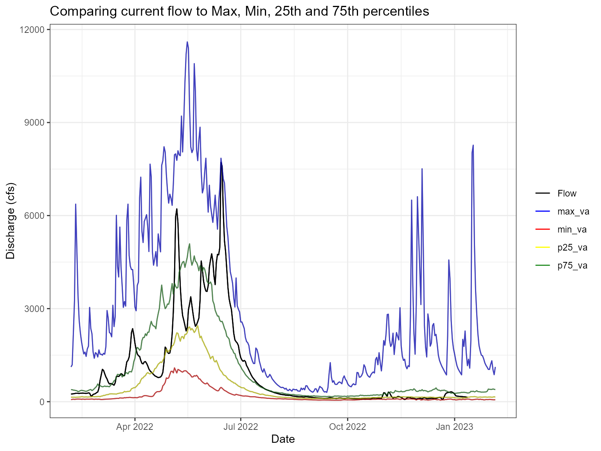
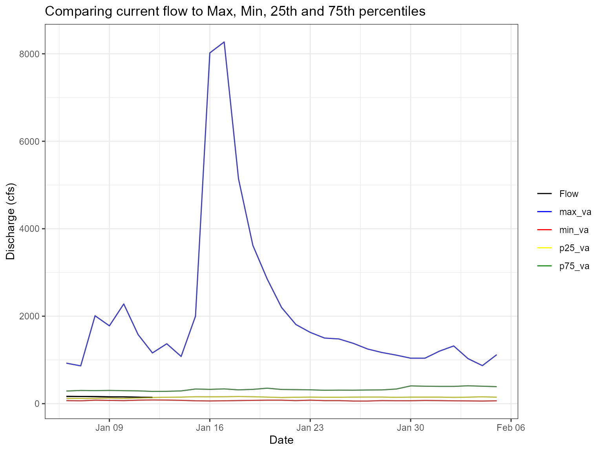
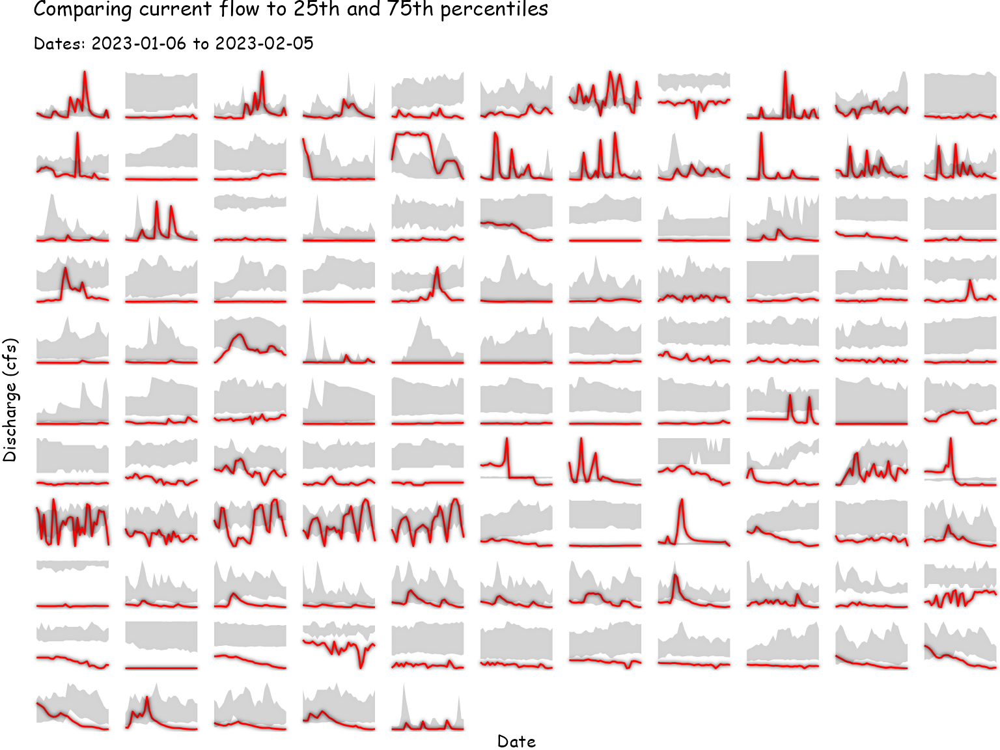
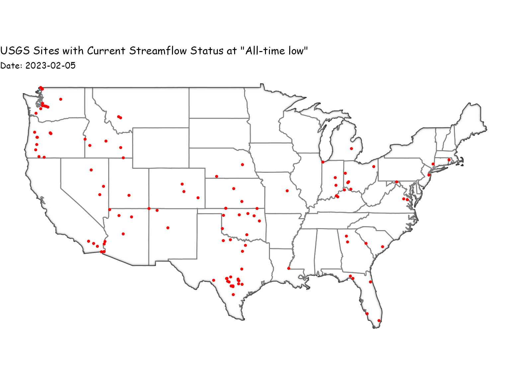
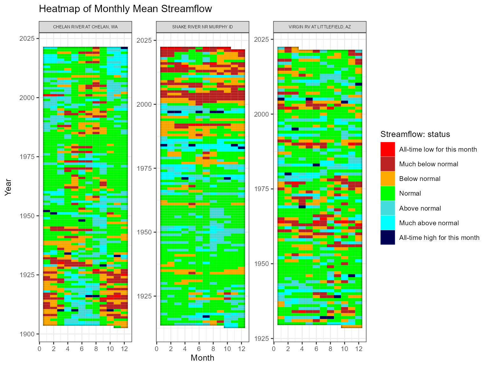
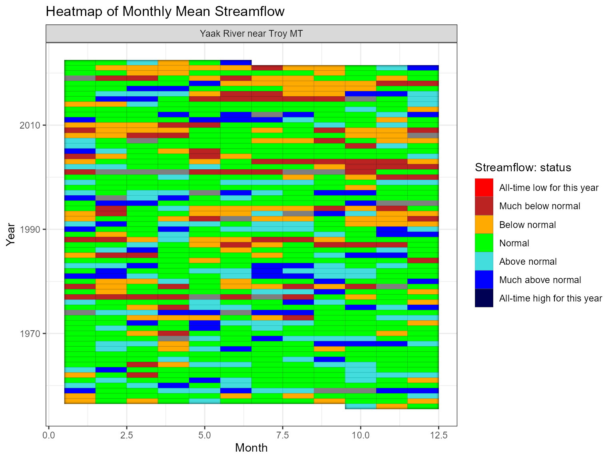
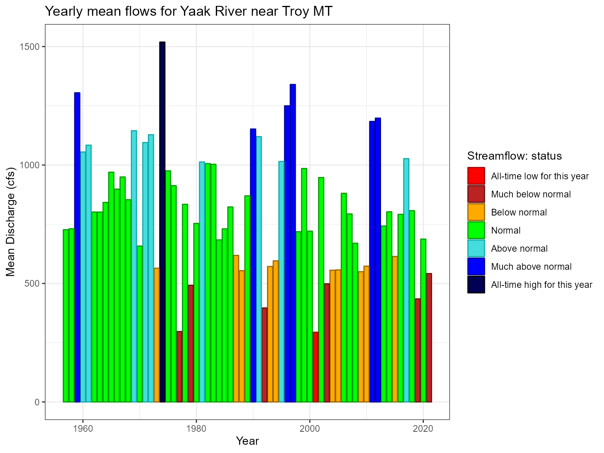

library(whitewater)
#> Due to potentially crashing (USGS Water Services) REST services keep your parallel processing to
#> 10 cores/workers or less
#> until further notice. Thank you!
library(ggplot2)
library(dplyr)
#>
#> Attaching package: 'dplyr'
#> The following objects are masked from 'package:stats':
#>
#> filter, lag
#> The following objects are masked from 'package:base':
#>
#> intersect, setdiff, setequal, union
library(tidyr)
library(sf)
#> Linking to GEOS 3.9.1, GDAL 3.2.1, PROJ 7.2.1; sf_use_s2() is TRUE
library(future)
library(ggfx)
#> Warning: package 'ggfx' was built under R version 4.1.3Sometimes you just want to compare the current flow (water year or past week, whatever you want) to historical flows (figure below). The ww_statsUSGS() function does this for you! It takes the historical values for your parameter (flow in this example) using the USGS Statistics Web Service beta and returns percentiles for each site but also combines current, monthly or yearly values and conditions depending on your choice of temporalFilter. Using the web service is really helpful because it quality controls the incoming data, i.e. data that is incomplete or not qc’d will not be returned. In this vignette we’ll go over the different options/arguments in the ww_statsUSGS() as well as some ways to visualize the results.
#> v Yaak River near Troy MT 'daily' was successfully downloaded.
#> v Yaak River near Troy MT 'NWIS Stat' for Temporal Filter (daily) was successfully downloaded.
The ww_statsUSGS() is essentially a wrapper around dataRetrieval::readNWISstat() but in addition will take the parameter values (‘Flow’, ‘Wtemp’, etc) calculated from the ww_floorIVUSGS() function and add to the data as well. Thus, the instantaneous values will look different than the daily mean values, as it should. Just like dataRetrieval, there are three different flavors of temporal windows that we can choose from: daily, monthly and yearly.
The temporalFilter argument is used to generate the window of percentiles. Like in the example below we just want to get the last 30 days of daily stats so we’ll put temporalFilter = 'daily' and days = 30. The days arguments is only used for daily but will go back the amount of days you input.
yaak_daily_report_30 <- yaak_dv %>% ww_statsUSGS(temporalFilter = 'daily',
days = 30)
#> v Yaak River near Troy MT 'NWIS Stat' for Temporal Filter (daily) was successfully downloaded.
yaak_daily_report_30
#> # A tibble: 31 x 33
#> Station site_no drainage_area lat long altitude agency_cd parameter_cd
#> <chr> <chr> <dbl> <dbl> <dbl> <dbl> <chr> <chr>
#> 1 Yaak River~ 123045~ 792 48.6 -116. 1839 USGS 00060
#> 2 Yaak River~ 123045~ 792 48.6 -116. 1839 USGS 00060
#> 3 Yaak River~ 123045~ 792 48.6 -116. 1839 USGS 00060
#> 4 Yaak River~ 123045~ 792 48.6 -116. 1839 USGS 00060
#> 5 Yaak River~ 123045~ 792 48.6 -116. 1839 USGS 00060
#> 6 Yaak River~ 123045~ 792 48.6 -116. 1839 USGS 00060
#> 7 Yaak River~ 123045~ 792 48.6 -116. 1839 USGS 00060
#> 8 Yaak River~ 123045~ 792 48.6 -116. 1839 USGS 00060
#> 9 Yaak River~ 123045~ 792 48.6 -116. 1839 USGS 00060
#> 10 Yaak River~ 123045~ 792 48.6 -116. 1839 USGS 00060
#> # ... with 21 more rows, and 25 more variables: ts_id <chr>, loc_web_ds <lgl>,
#> # month_nu <dbl>, day_nu <dbl>, begin_yr <dbl>, end_yr <dbl>, count_nu <dbl>,
#> # max_va_yr <dbl>, max_va <dbl>, min_va_yr <dbl>, min_va <dbl>,
#> # mean_va <dbl>, p05_va <dbl>, p10_va <dbl>, p20_va <dbl>, p25_va <dbl>,
#> # p50_va <dbl>, p75_va <dbl>, p80_va <dbl>, p90_va <dbl>, p95_va <dbl>,
#> # month_day <chr>, Date <date>, Flow <dbl>,
#> # Flow_StatisticsStatusDescription <fct>
If we want to compare multiple sites that fine too! In addition, you don’t have to pipe a ww_dvUSGS() object into the function either. You can just input the sites you want; however, I always recommend using ww_dvUSGS() because you’ll likely come back to the daily values anyway but in the example below we’ll just call with inputting the sites into the sites argument. If you’re going to use the sites argument you’ll also need to specify the parameter_cd!
multiple_sites <- ww_statsUSGS(sites = c('12304500', '14159200'),
parameter_cd = '00060',
temporalFilter = 'daily',
days = 30)
#> v Yaak River near Troy MT 'NWIS Stat' for Temporal Filter (daily) was successfully downloaded.
#> v SO FK MCKENZIE RIVER ABV COUGAR LAKE NR RAINBOW OR 'NWIS Stat' for Temporal Filter (daily) was successfully downloaded.#> Warning: Ignoring unknown parameters: text_smoothing, hjust
#> Warning: Ignoring unknown aesthetics: labelWhat’s nice about this is you can run in parallel using the argument parallel = TRUE (see Parallel vignette for more details on parallel processing). We’ll use the ww_current_conditions() to get the current streamflow status for the lower 48 that has a description of All-time low for this day and then we’ll use these sites to view the last 30 days!
current_condition <- ww_current_conditions() %>% filter(StatisticsStatusDescription %in% c('All-time low for this day'),!TimeZoneCode %in% c('AKDT', 'AST','HST', 'GST'))
plan(multisession(workers = 10))
atl_sites <- ww_statsUSGS(sites = unique(current_condition$SiteNumber),
parameter_cd = '00060',
temporalFilter = 'daily',
days = 30,
parallel = TRUE,
verbose = FALSE)

Now we can looked into the other temporal windows like monthly and yearly. These work the same as daily but now we just need to change the argument.
yaak_monthly_stats <- ww_statsUSGS(yaak_dv, temporalFilter = 'monthly')
#> v Yaak River near Troy MT 'NWIS Stat' for Temporal Filter (monthly) was successfully downloaded.
yaak_monthly_stats %>%
filter(month == 8) %>%
mutate(diff = mean_value-p50_va,
Status = if_else(diff > 0, "Above normal", "Below normal")) %>%
ggplot(aes(year_nu, diff, fill = Status)) +
with_outer_glow(geom_col(), sigma = 20) +
scale_fill_manual(values = c("#009900","#996600")) +
labs(y = 'Discharge (cfs)', x = 'Year', color = '', title = 'Comparing monthly mean flow in August to 50% percentile') +
theme_dark()This looks interesting! What about the sites that have all-time low for today? Well, just like above we change the temporalFilter argument to monthly instead of daily and then use those site numbers to get back a tibble with mean monthly flows and statistics for each month per year per site.
We can then look at a few of the sites in a heatmap style graph.

Or, back to the Yaak, MT station.

Same as monthly we can do this for yearly.
yaak_yearly_stats <- ww_statsUSGS(yaak_dv, temporalFilter = 'yearly')
#> v Yaak River near Troy MT 'NWIS Stat' for Temporal Filter (yearly) was successfully downloaded.Now we can look at the mean value for the year against the 25th and 75th percentiles.
Or look at it in a bar graph with fill as the status.
p <- yaak_yearly_stats %>%
ggplot(aes(year)) +
geom_col(aes(year, mean_value, fill = StatisticsStatusDescription,
color = StatisticsStatusDescription), show.legend = T) +
scale_color_manual('Streamflow: status',
values = c(
"All-time low for this year" = "#990000",
"Much below normal" = "#661111",
"Below normal" = "#996600",
"Normal" = "#009900",
"Above normal" = "#11aaaa",
"Much above normal" = "#000099",
"All-time high for this year" = "#000000"))+
scale_fill_manual('Streamflow: status',
values = c(
"All-time low for this year" = "#FF0000",
"Much below normal" = "#BB2222",
"Below normal" = "#FFAA00",
"Normal" = "#00ff00",
"Above normal" = "#44dddd",
"Much above normal" = "#0000FF",
"All-time high for this year" = "#000055"))+
labs(y = 'Mean Discharge (cfs)',
color = '',
x = 'Year',
title = paste0('Yearly mean flows for ', yaak_yearly_stats %>% slice(n = 1) %>% pull(Station)))
p
Hopefully this gives you an idea of how to use whitewater with the ww_statsUSGS() function? If you have any questions or issues please submit a issue on github. Thanks!